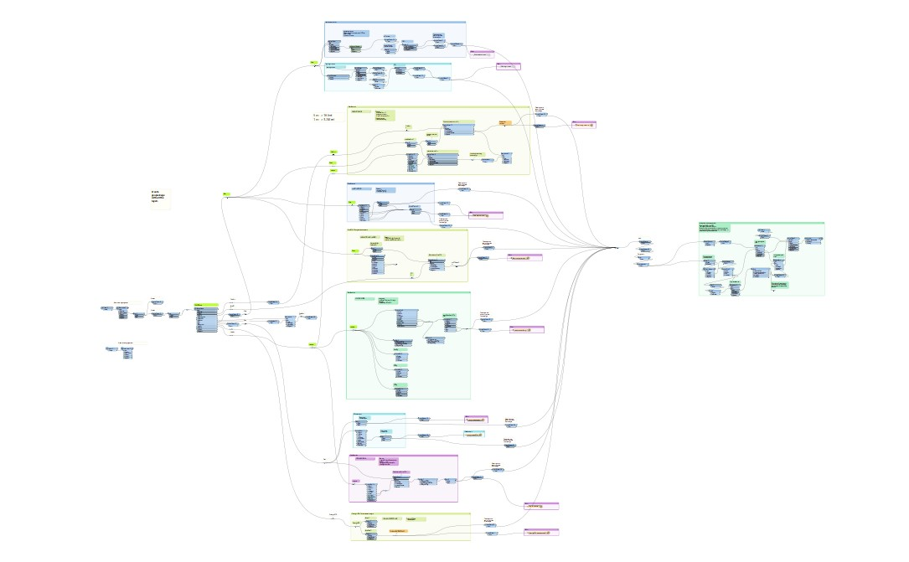

Maximizing GIS Workflow Efficiency with FME: My Experience at Sharper Shape Group
In my current role at Sharper Shape Group, I have been leading the quality assurance of vectors delivery and lidar classification tiles. As a GIS specialist, I have been utilizing various tools to ensure high-quality data delivery. One of the most powerful tools I have come across is FME. FME is a powerful data integration platform that can automate complex workflows and handle large amounts of data. As a GIS specialist, my role at Sharper Shape Group is crucial to ensuring the delivery of high-quality data. Sharper Shape Group is a company that specializes in providing drone-based asset inspections and data analytics services for the utility industry. The company utilizes cutting-edge technology to capture data and provide valuable insights to its clients. My expertise in GIS tools and techniques plays a significant role in ensuring that this data is accurate, reliable, and delivered in a timely manner.
Using FME has been a game-changer for me at Sharper Shape Group. With FME, I have been able to automate long and complex data workflows, including data integration and transformation, data validation, and data loading. FME has saved me a significant amount of time and effort, allowing me to focus on other important tasks. Additionally, FME's ability to handle large volumes of data has been a huge advantage in a fast-paced working environment. Moreover, I have also improved my understanding of point clouds, a critical data source for many GIS projects. I have been utilizing tools such as Lidar360 and Lidar Accuracy Report to improve the accuracy and precision of our lidar data. With my improved skills and knowledge of these tools, I have been able to contribute significantly to Sharper Shape Group's data processing and analysis efforts.
My role as a GIS specialist at Sharper Shape Group has allowed me to gain a deeper understanding of various GIS tools such as QGIS, Lidar360, and FME. Through my experience in leading the quality assurance of vectors delivery and Lidar classification tiles, I have developed the necessary skills to automate long processes involving vector and raster datasets. My ability to face challenges head-on has allowed me to provide high-quality deliverables in a fast-paced working environment.